Local Meta ads
Reach nearby people on Facebook and Instagram.
Public audit / November 2, 2026
We’re Vessel Archive, a local Sacramento marketing team.
A screenshot-backed audit for Morton Golf.
Reach nearby people on Facebook and Instagram.
One content plan. Every location.
Help each course get found on Google.
Priority 01 / Broken entry point
We opened mortongolf.com. It sent us to f2hgolf.com/morton/, which shows a 404 error: the page cannot be found.
Someone looking for Morton can miss the courses, tee times and event venues before they get started.
What we’d change
Send the main domain to a useful Morton page with a clear route to each course and event venue.
Observed in the browser. PageSpeed also confirmed HTTP 404 and blocked indexing. Search or revenue loss was not measured.
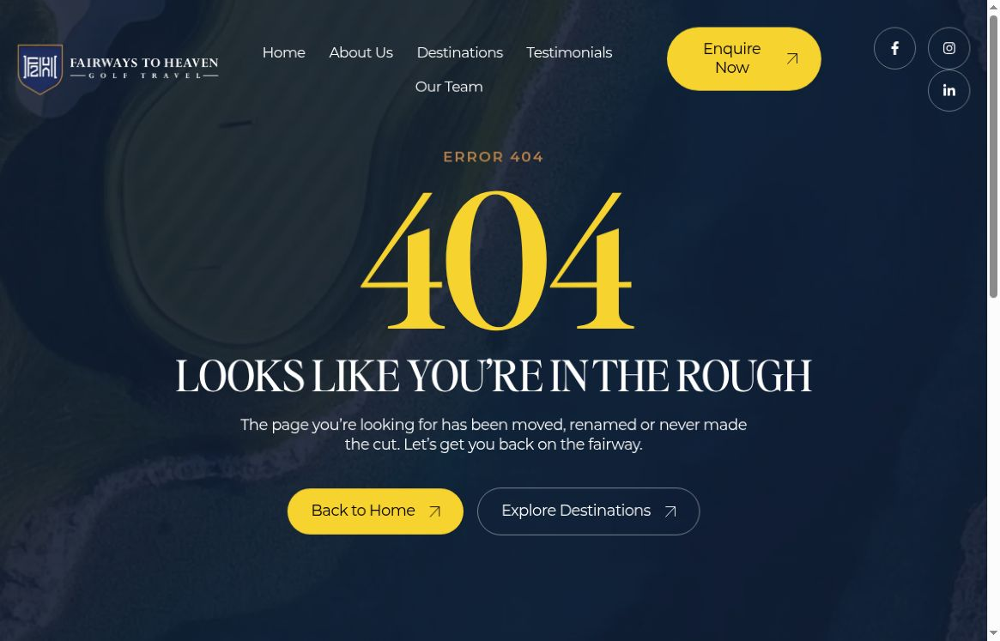
Priority 02 / First-visit performance
Haggin Oaks scored 57/100 in one mobile speed test. The largest page item took 13.1 seconds to appear. The test downloaded 7,593 KiB (about 7.4 MiB).
That is a risk for a first visit on a slow connection—not proof that every golfer waits this long.
What we’d change
Shrink heavy images, load lower-page content later, then test again.
Important: real-user mobile results pass Google’s Core Web Vitals, with 1.3-second LCP. LCP means when the largest visible item appears. Lab: slow-4G phone simulation, Nov 2.
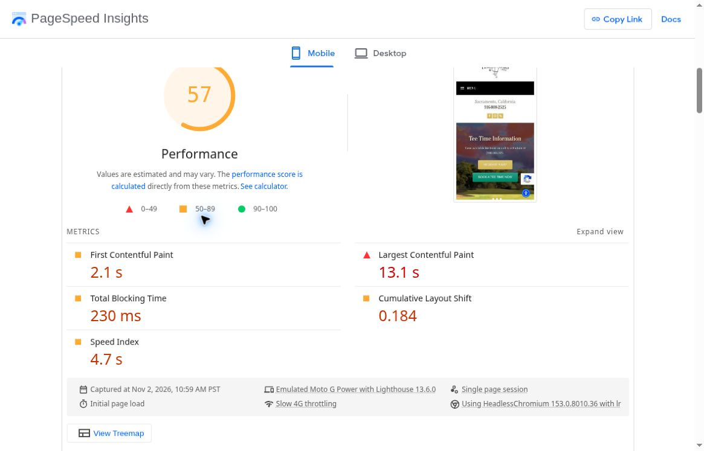
Priority 03 / Paid click path
An active Haggin Oaks Toptracer video ad leads to the Instagram profile, rather than a page for the range challenge or a bay booking.
That adds another place to look before a player can act. It may be right for a profile-growth goal; booking results are not public.
What we’d change
For a booking-focused test, send the same video to a clear range page with the offer, hours and next step.
Observed U.S. active-ad result, started September 1, 2026. This is a test idea—not a claim the ad performs badly.
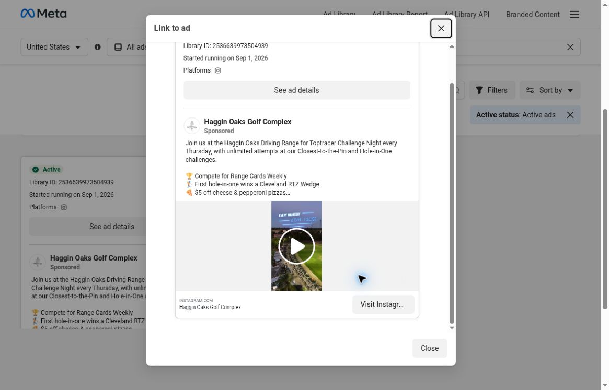
What you do well / Course profiles 1 of 2
Haggin Oaks: 4.5 / 1,107 reviews. Its Google website button goes to Haggin Oaks, not the broken Morton destination.
That is why the parent-domain problem should not be called a failure of every course’s local listing.
What we’d change
Keep each course’s own page and Google profile. Make the Morton page a useful guide between them.
Google profile snapshot, November 2. Ratings and counts change.
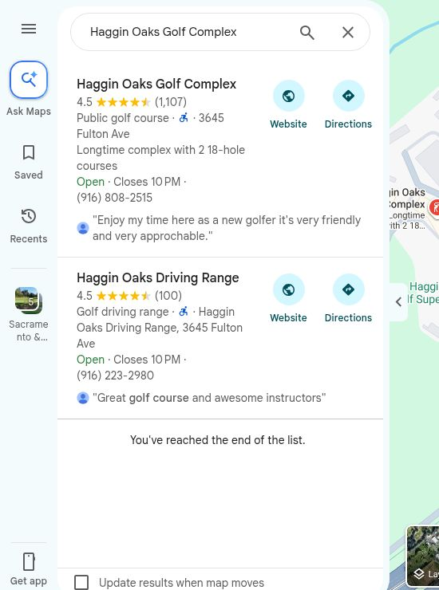
What you do well / Course profiles 2 of 4
4.3 / 527 Google reviews. The profile’s website button points to Bing Maloney’s own site.
A shared content team can keep the course’s own story while reusing a simple monthly planning process.
Profile snapshot only. Full hours, category, photo and reply coverage is listed in the audit notes—not assumed complete.
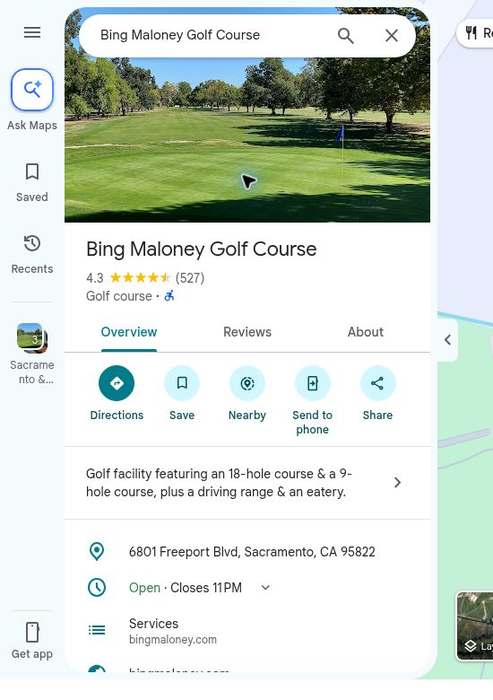
What you do well / Course profiles 3 of 4
4.3 / 458 Google reviews. Its website button points to the Bartley Cavanaugh site.
Keep range, golf, dining and event content tied to the right course so visitors do not have to sort it out.
Google profile snapshot, November 2. No rank or lead-volume claim.
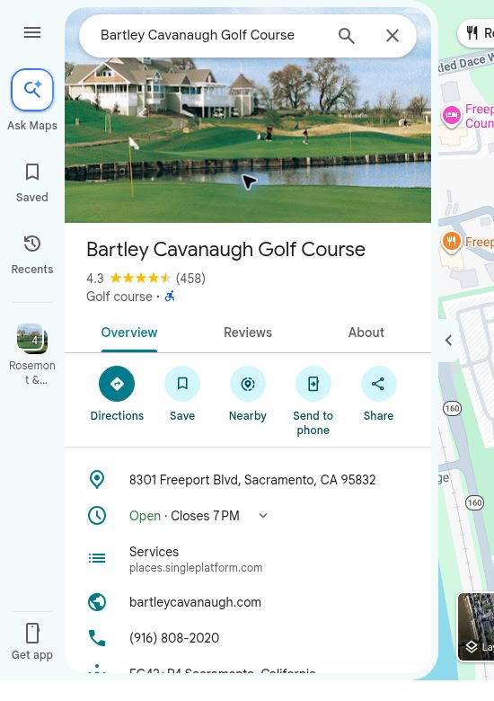
What you do well / Course profiles 4 of 4
4.4 / 312 Google reviews. Its website button goes to William Land’s own site.
The course can have its own beginner-friendly content and booking link, backed by the same production team.
Google profile snapshot, November 2. Review counts are not measures of current marketing performance.
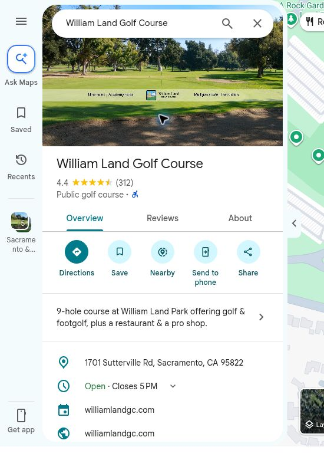
Conversion / Tee-time path
Haggin’s homepage “Book a Tee Time Now” leads to a course chooser. “Play Alister MacKenzie” then opens live tee times: two clicks to availability.
Bing’s main booking route also uses a chooser. Bartley and William Land offer a direct booking link from home.
What we’d change
Reuse a simple location → course → available time pattern. Keep call and booking actions easy to find on phones.
Counts start at the named homepage button and end at availability—not a completed booking. No reservation or payment was made. Mobile fold/tap testing remains unverified.
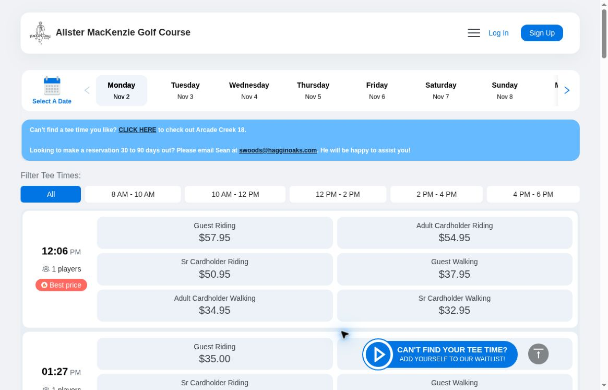
Conversion / General contact
Haggin’s general contact form marks a postal address as required, alongside name, email and phone.
That asks more of someone who only wants a quick answer. Whether people leave the form is not public.
What we’d change
Keep only fields staff need to reply. Make extra details optional and label the message box clearly.
Form inspected without submission. Delivery, validation and follow-up were not tested.
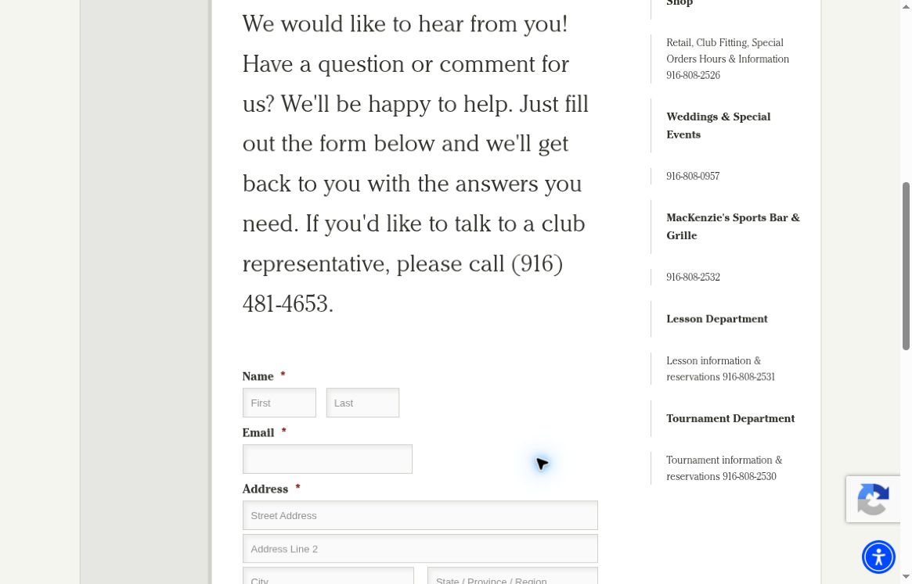
Conversion / Event inquiries
The Pavilion contact page displays 916-808-0957. Its call link points to 916-808-2531 in the page code.
Haggin’s contact page labels 2531 as the Lesson Department and 0957 as Weddings & Special Events.
What we’d change
Confirm the intended line with the team, then make the visible number and call link match.
Screenshot shows the visible number. Destination was checked in the live DOM and fetched HTML. No call placed; call forwarding is unknown. Homepage → Weddings → Contact: two clicks to the inquiry form.
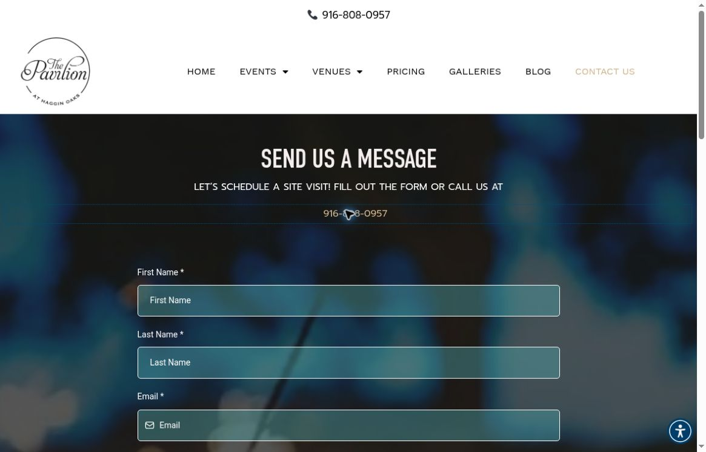
Consistency / Public contact details
Haggin’s Facebook page shows 916-808-2515 in its Intro, 916-481-4653 in contact details, and Always open.
The main site shows 916-808-2525. Google showed the course closing at 10 PM on the review day. Different departments may explain some of this.
What we’d change
Label each department and its hours. Keep the main course details consistent where the same service is meant.
Do not replace numbers or hours until staff confirm them. No mystery calls were made.
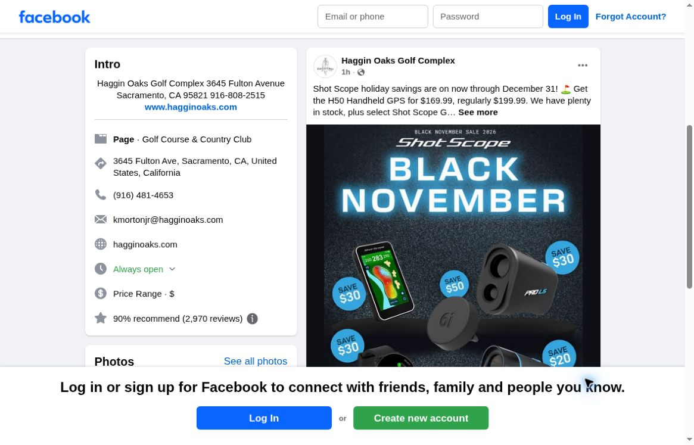
Speed / Both test conditions
Desktop lab: 68/100, 4.7-second LCP. The desktop test transferred 10,083 KiB (about 9.8 MiB).
Real-user results pass on both phone and desktop. Real-user LCP was 1.3 seconds on mobile and 1.1 seconds on desktop.
What we’d change
Improve the heavy first visit without overstating the problem. Compare repeat tests and actual booking results.
One Lighthouse run per device. Different test conditions explain different payloads. Transfer weight is not the HTML file size.
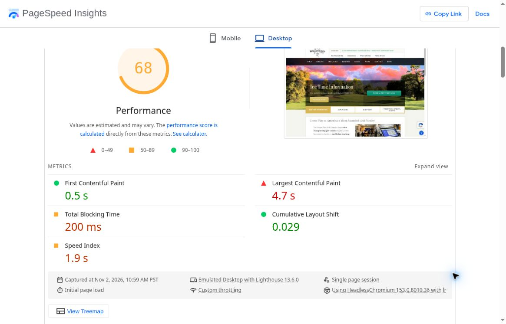
SEO / The parent-domain risk
Google’s PageSpeed test follows the Morton link and flags the destination as HTTP 404 and blocked from indexing. Indexing means a page can be stored for search results.
The issue is the error page—not simply moving to another domain. The course Google profiles still have their own working website routes.
What we’d change
Use a permanent redirect to a relevant, indexable Morton page. Check old links and search-console data with the owner.
No access to Search Console, traffic history or before/after ranks. A measured search decline cannot be claimed.
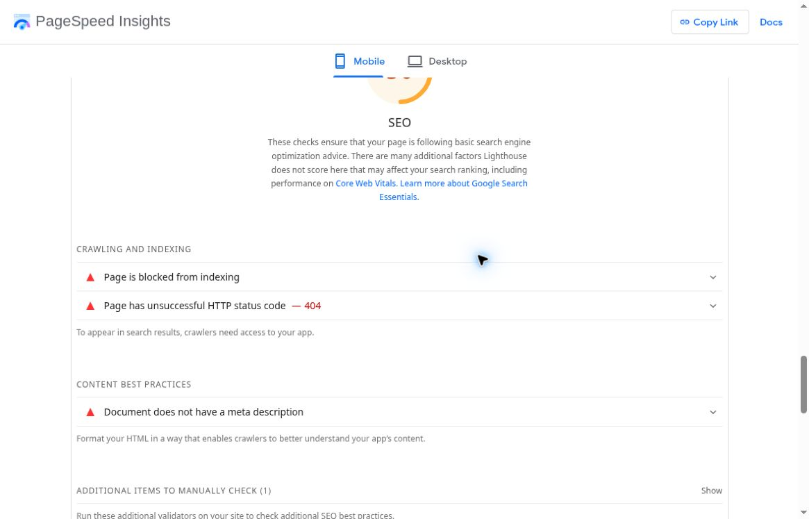
Tracking / What is visible
The Haggin speed report lists a Google Analytics 4 script. GA4 is Google’s website measurement tool.
A loaded script does not prove booking or event-inquiry actions are counted correctly. Public review cannot settle whether the Meta Pixel or all conversion events work.
What we’d change
With approved access, check one booking and one inquiry from click to recorded result. Do not send form details to ad platforms.
No test leads, accounts, bookings or tracking changes were created. Other source checks found Google Tag Manager on all four course homepages.
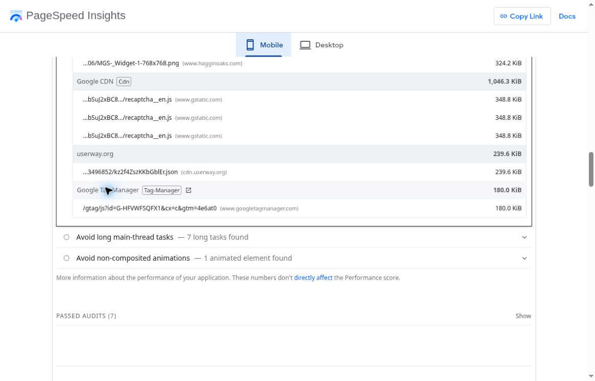
Paid ads / Scope of the check
The U.S. active-ad keyword search returned about seven cards. Six matched Haggin Oaks or the Pavilion; one unrelated result was excluded.
The relevant set included the range video and five Pavilion cards. Four Pavilion cards started in June 2025; a holiday-party card started in September 2026.
What we’d change
Keep the useful creative. Test new versions by offer and destination, using real results to decide what stays.
Keyword search is not a full account inventory. An older start date does not prove ad fatigue. Spend, reach, leads and return are private.
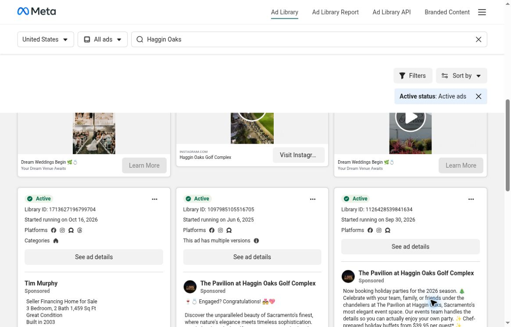
Social / What we could verify
Haggin Facebook showed 8.3K followers and a retail image posted about an hour before our check. The active Toptracer ad also shows that video content exists.
This is not an inactive brand. A shared schedule could balance golf, range, shop, dining and event stories without relying on one person to cover everything.
A full month of posting frequency and engagement was not verified. Instagram access was limited; TikTok data was unavailable. No follower-to-engagement ratio is claimed.
Local search / Snapshot 1 of 3
For “Sacramento golf tee times,” the checked results included booking marketplaces and Morton course pages. People can reach a course through more than one route.
What we’d change
Make direct booking clear on each course page. Use approved analytics to compare direct bookings with marketplace traffic.
One logged-in browser snapshot, not a Sacramento-wide rank study. Position changes by person, place and time. No lost-ranking claim.
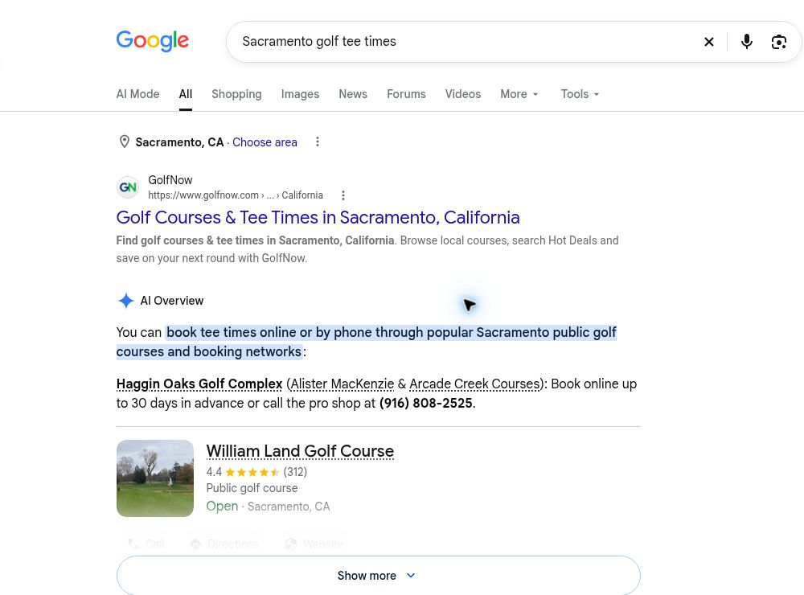
Local search / Snapshot 2 of 3
The “Sacramento driving range” snapshot showed Haggin Oaks in the local map results, alongside Leader Golf.
This is a strength to keep. Clear location details and a direct range action can turn that visibility into an easier visit.
Search snapshot only. It does not measure all locations, searchers or booking outcomes.
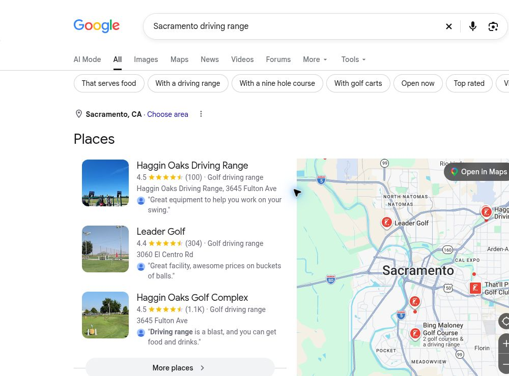
Local search / Snapshot 3 of 3
For “Sacramento golf wedding venue,” the visible local results included the Pavilion at Haggin Oaks and Lakeside at Bartley Cavanaugh, with Granite Bay Golf Club.
Keep the venue names, photos and inquiry routes clear. The next step is not to erase a strong local presence; it is to help each lead reach the right team.
One browser snapshot—not proof of a universal rank or redirect-related search loss.
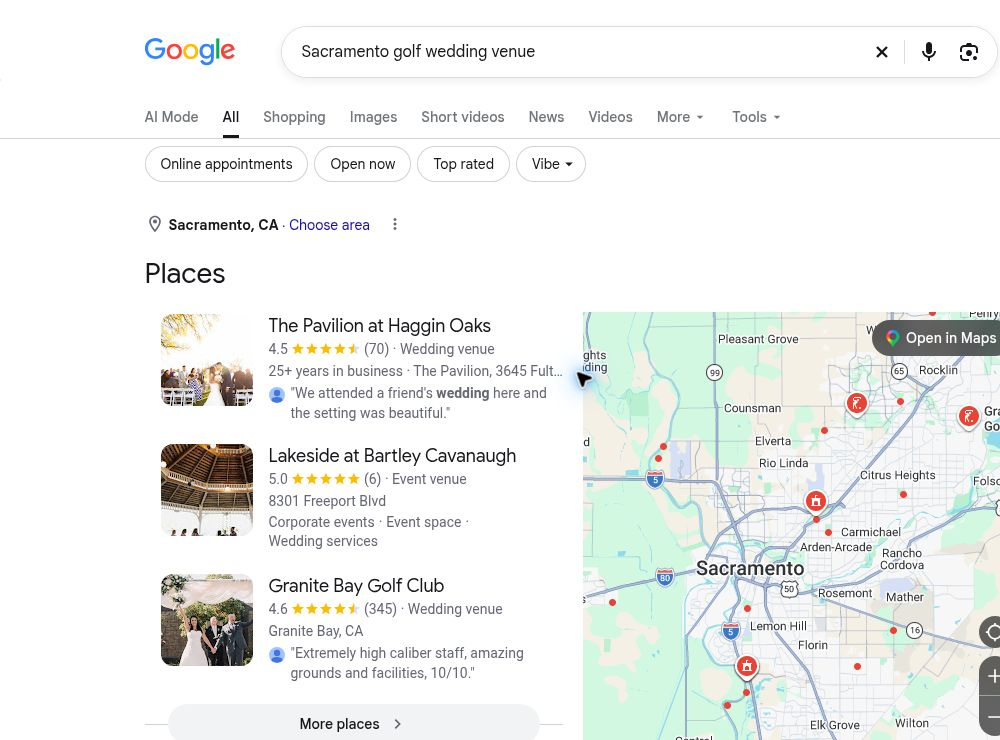
Competitor comparison / Teal Bend
Teal Bend separates tee times, the course, dining and lessons in its main menu. Its tee-time link leads to the booking search, and a waitlist option is visible.
What we’d change
Borrow the clarity—not the design. Keep one direct route for each Morton location and a useful fallback when times fill.
Public homepage comparison only. No paid booking was made; this is not a claim that the whole competitor site is better.
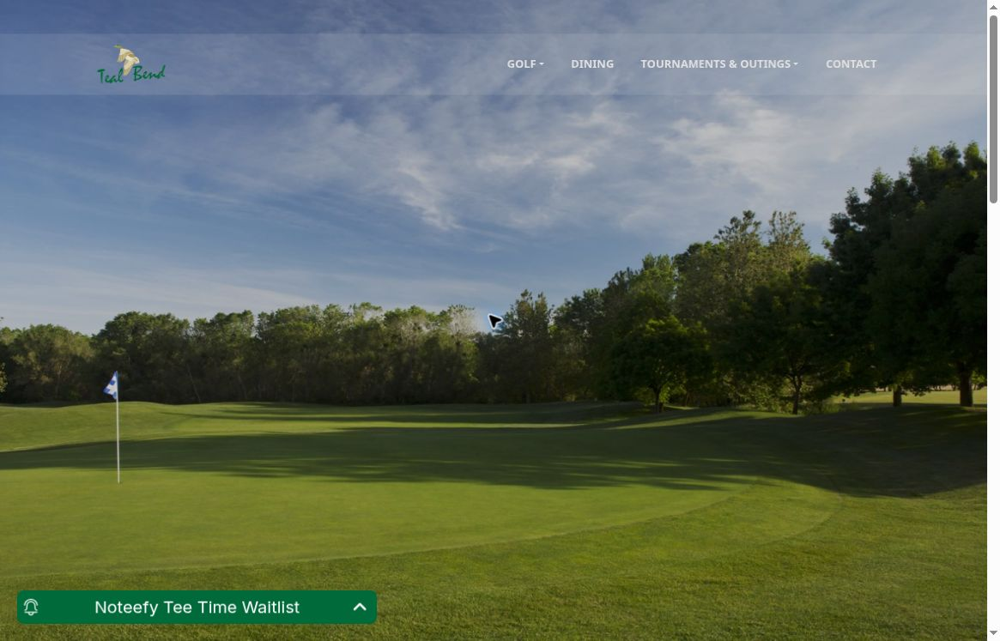
Competitor comparison / WildHawk
WildHawk puts “Tee Times” in the top navigation. Its page offers a call-to-book route and a Book Online link.
What we’d change
Keep online and phone options clear and consistent. Send each one to the intended course or department.
Public route comparison. The screenshot shows the top-level route; link targets were inspected. Booking completion and conversion rate were not tested.
Ten-part audit / Coverage and limits
Mobile and desktop PageSpeed: Haggin homepage and the Morton redirect destination. Root scores describe an error page, not the courses.
32 sampled course navigation URLs returned 200. Not every page crawled. No full SSL, mixed-content, duplicate-page or form-delivery audit.
Public booking and event routes inspected without submitting. Phone-size first-screen layout and full booking completion remain unverified.
GA4 loaded on Haggin; source shows Tag Manager on four homepages. Conversion events and Meta Pixel not fully verified.
Active U.S. keyword and Haggin advertiser checks. Not a full account inventory; no performance data.
Recent Facebook activity checked. Full posting cadence, engagement and TikTok unavailable; Instagram access limited.
Four profiles checked separately. Ratings, main category, phone, visible Monday hours, photos and own-site links captured. Full owner-reply and review-recency coverage incomplete.
Three query snapshots. Not a geogrid or stable ranking study.
Four homepage sources, Haggin robots and sitemap index checked. Index/follow and structured page data present. Exhaustive thin/duplicate-page check not complete.
Teal Bend and WildHawk public booking routes compared. No private analytics or purchases.
Facts are observed snapshots. Possible business effects are hypotheses. No traffic, revenue, ad-spend or lost-lead figures are estimated.
How we would help / A team around your director
Fix the Morton entry point, verify event-call links and simplify the contact form before adding traffic.
Batch shoots across courses, ranges, shops, dining and events. Give each location clear owners and approval dates.
Send each offer to its own useful page. Keep profiles current and report calls, tee times and event inquiries separately.
Ideas for the next shoot
Show where to park, how a bay works and what a beginner needs. End with that range’s next step.
Show a wedding, team dinner and banquet layout. Let the event team explain the inquiry process.
Show each course’s feel, who it suits and where to book. Keep the location clear in every clip.
A proposed starting plan
Confirm the right landing pages and contact lines. Fix priority routes. Set a shared calendar with the marketing director.
Batch video and photo work. Test direct offer pages against current ad routes. Check booking and inquiry measurement with permission.
Compare useful results for each course and venue. Repeat the content that helps people act, and improve weaker routes.
Proposed work only. Timing depends on scope, access and approvals. No ad spend, outreach or tracking changes are included in this audit.
From one local team to another
Whether we work together or not, we hope this helps. We love seeing Sacramento-area businesses do well. The first step is to make the right route clear.